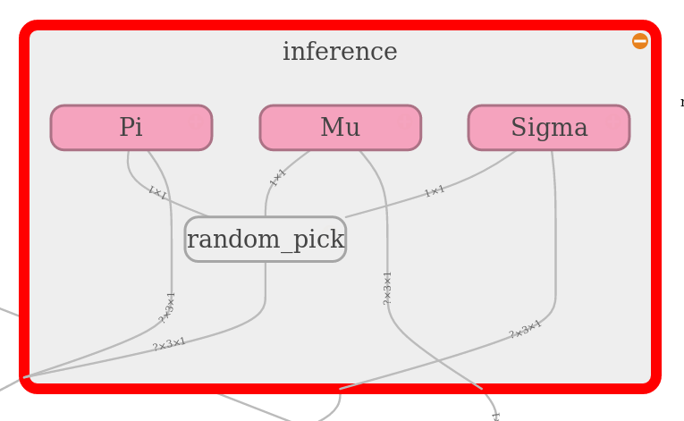

Neurocat module¶
A modest software toolbox for creating and training Neural Networks in tensorflow and for handling of data input.
-
class
Neurocat.Loading(nepoch, label='')¶ Bases:
objectVisualisation of loading process in as graphic interface for the terminal. Gives information of the state of the process and linearly approximates remaining time for calculation.
Example:
train the network ################# Loading 25000 Epochs Approx. time remaining: 0.27 minutes
Parameters: - nepoch – Total number of calculations stages
- label – name of calculation process
-
in_progress(counter)¶ Check calculation state.
Parameters: counter – progress of the calculation in relation to global variable nepoch Returns: truth value counter < nepoch
-
loading(counter)¶ Give object information of its state. In the initialisation the total amount of processes is given.
Parameters: counter – state of calculation process. Returns:
-
range()¶ Iterable of calculation for e.g. FOR loop etc.
-
treshold()¶ Total number of calculation stages
-
Neurocat.gen_layer(name, input, shape, dev_w=0.5, dev_b=0.5, activation=<function sigmoid>, res=None)¶ Generate tensorflow layer.
Todo
picture from tensorboard
Parameters: - name – name for graph visualization
- input – input of the layer
- shape – Size of input and output vector
- dev_w – std deviation of initializing of the weights
- dev_b – std deviation of initializing of the bias
- activation – tensorflow activation function. None for no activation
- res – residual term from past layers
Returns: weights, bias and node of the output for computation graph
-
Neurocat.gen_myst_layer(input, shape, std_dev=0.5)¶ Create hierarchical (mystery) layer that filters the outcome of the output of the previous layer
Todo
- picture from tensorboard
- validate functionality
Parameters: - input – input to the layer that has to be filtere
- shape –
- std_dev –
Returns: Output node for calculation graph and filter
-
Neurocat.generate_ensemble(π, μ, σ, amount=1)¶ Generate ensemble from gaussian mixtures.
Todo
- math to explain what happens
- greek letters
Parameters: - π – weight of the mixtures
- μ – mean of the mixtures
- σ – deviation of the mixtures
- amount – amount of random variables
Returns: Random variable from mixture model
-
Neurocat.layerloop(name, input, shapes, std_dev=0.5, activation=<function sigmoid>, res=None)¶ Create multiple layers that are connected to each other
Todo
picture from tensorboard
Parameters: - name – name for graph visualization
- input – input of the first layer
- shapes – input and output shape of all layers
Returns: node of the output for computation graph

{kind=link}